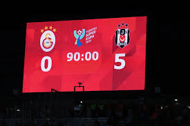
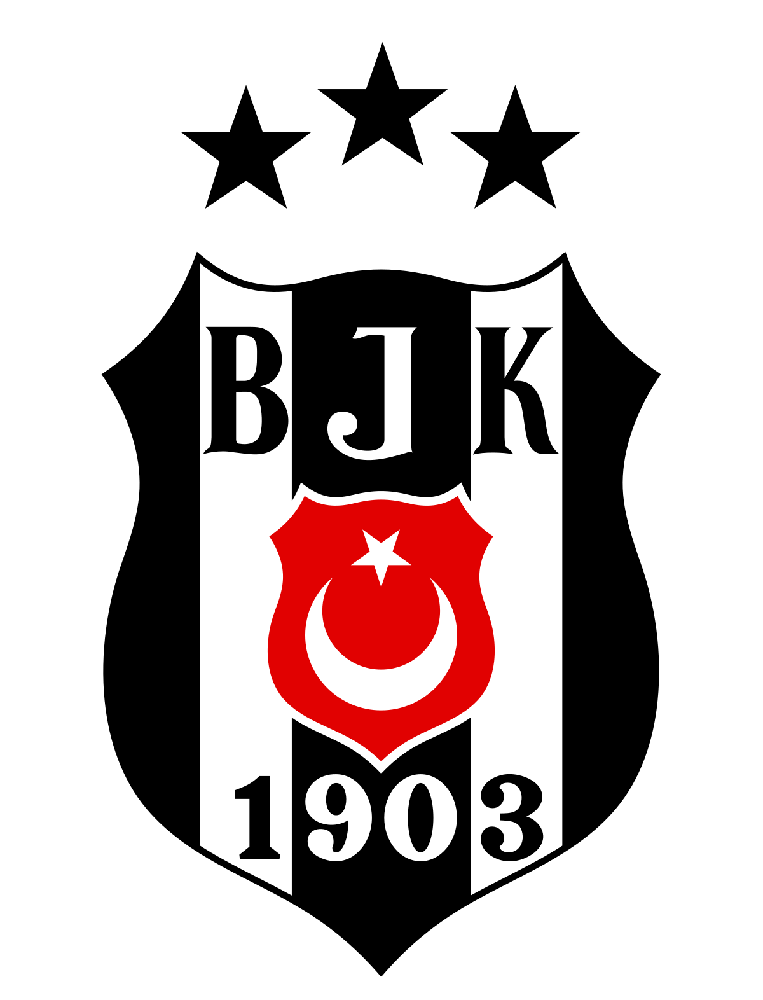

HOBİLERİM


Adım Burak Can , soyadım ÖZDAĞ. 2006 Düzce doğumluyum. Düzce Fen Lisesinden mezun olup Sakarya Üniversitesi Bilgisayar Mühendisliği bölümünü kazandım.
Şu anda 1. sınıfım. Küçüklüğümden beri bilgisayarla iç içeyim. Oyun oynamayı , kod yazmayı , yeni şeyler öğrenmeyi severim.
HOBİLERİM |
|||
| Futbol Maçı İzlemek | Oyun Oynamak | Kod Yazmak | Şarkı Dinlemek |
|  | |
|
|
Tuttuğum Takım |
|
|  | BEŞİKTAŞ JKBeşiktaş, Beşiktaş Jimnastik Kulübü'nün Süper Lig'de mücadele eden futbol takımıdır.1903 yılında Bereket Jimnastik Kulübü (Asıl Çerkesçe ismi Bereketiqo olup bazı kurucuların mensup olduğu Çerkes sülalesinden gelmektedir, Türkçeye Bereket olarak çevrilmiştir.) adıyla kurulan Beşiktaş JK'nin, Ağustos 1911'de kurulan şubesidir.Maçlarını 2012-13 sezonuna kadar 32.086 kapasiteli İnönü Stadyumu'nda oynamıştır.2012-13 sezonu sonunda kulüp, yeni stad yapım çalışmaları başlatmıştır.Armasında ay-yıldız taşıma izni verilen 28 Türk kulübünden biridir. Beşiktaş, Türkiye futbol tarihinin başarılı ve en çok taraftarı olan spor kulüplerinden birisidir. Beşiktaş'ın toplamda 16 Süper Lig (14 Süper Lig + 2 Federasyon Kupası), 11 Türkiye Kupası ve 10 Süper Kupa şampiyonluğu bulunmaktadır |
| Aldığı Kupalar | Aktif Kadrosu |


|
|